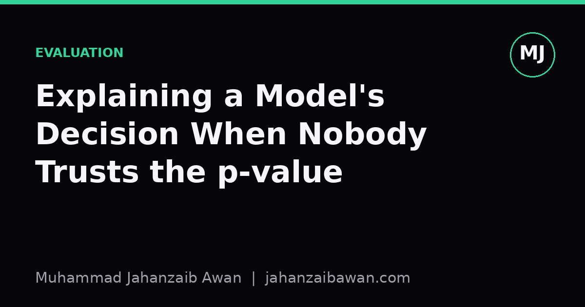

Explaining a Model's Decision When Nobody Trusts the p-value
A stakeholder who distrusts statistics is not being difficult; they are asking you to prove your model works in a language they can act on.

The trust problem is not about maths
I used to think that when a stakeholder pushed back on a p-value, the fix was a better explanation of hypothesis testing. It rarely was. Most of the time the person in front of me had been burned before: a model that looked significant in a report and then quietly failed in production, or a confident chart that turned out to hide a data leak. Their scepticism was not innumeracy, it was pattern matching on past disappointment.
A p-value of 0.03 tells you how surprising your result would be under a null hypothesis, assuming your data collection and testing procedure were exactly as designed. It says nothing about whether the effect is large enough to matter, whether the sample reflects the population you actually care about, or whether you quietly tried five models and reported the one that worked. Stakeholders who have seen statistics used as a rhetorical shield are right to ask what is being hidden behind the number.
So the first move is not to defend the p-value, it is to stop leading with it. If someone asks 'why should I believe this model', answering with a significance threshold is answering a different question than the one they asked. They want to know what happens if they act on your recommendation and it turns out to be wrong.
Translate significance into consequence
Suppose I have built a churn model and I tell a stakeholder that a new intervention reduces churn with p less than 0.01. A reasonable response is 'so what'. The useful reframe is to talk in the units they already manage: customers, pounds, and time. Say the baseline monthly churn is 4.2 percent on a base of 50,000 customers, and the intervention brings it down to 3.6 percent in a held-out test group. That is 300 fewer customers lost per month. If average customer lifetime value is 180 pounds, that is roughly 54,000 pounds of retained value monthly, before accounting for the cost of running the intervention.
Now the p-value has a job: it tells us how likely it is that a difference this size, or larger, would appear by chance alone if the intervention did nothing. But I present that as a supporting fact, not the headline. I would say something like: 'we saw a 0.6 percentage point drop in churn, worth about 50,000 pounds a month; the chance this is just noise is under one percent, based on a test with 8,000 customers per arm.' That last clause matters too, because it tells the stakeholder the claim is falsifiable and scoped, not a black box verdict.
The other half of this translation is confidence intervals rather than a single point estimate. A 95 percent interval of minus 0.2 to plus 1.4 percentage points on churn reduction tells a very different story to a stakeholder than 0.6 percent with a tidy p-value. It says the true effect could be small, or could be twice what we measured, and that uncertainty is honest information they need before committing budget.
Show the failure modes, not just the win
Trust is built faster by showing where a model is weak than by insisting it is strong. I try to bring a confusion matrix or an error breakdown to these conversations rather than a single accuracy number. If a fraud detection model catches 82 percent of fraudulent transactions but also flags 1 in 40 genuine transactions as suspicious, that trade-off is something a stakeholder can weigh against their own tolerance for customer friction. A bare 'this model is 91 percent accurate' hides that trade-off entirely, especially when fraud might be rare, say 2 percent of transactions, meaning a model that predicts 'not fraud' every time would already score 98 percent.
I also walk through how the evaluation was done, in plain terms: the test set was collected after the training period, so the model has never seen these customers before, and the split respects time so we are not accidentally letting future information leak backwards into past predictions. Stakeholders who distrust statistics are often, without knowing the vocabulary, worried precisely about leakage: that the test looks good only because it was rigged to look good. Naming that concern and showing the safeguard directly addresses the root distrust rather than the surface complaint about p-values.
A concrete comparison helps too. I like to show what a simple, transparent baseline does, such as always predicting the majority class, or a basic rule like 'flag anyone over 60 days late'. When the stakeholder can see the model beats that baseline by a specific, meaningful margin, on data it has not seen, in a way that maps to money or risk they recognise, the statistical test becomes a footnote rather than the entire argument.
The practical takeaway
A p-value is a tool for the analyst, not a currency for the stakeholder. When someone distrusts it, the right response is to lead with consequences they can act on: customers retained, pounds saved, errors avoided, and the honest range of uncertainty around each of those numbers. Keep the significance test present but secondary, and always pair it with the size of the effect, since a tiny, statistically significant improvement can still be practically worthless.
Equally important is transparency about method: how the test set was built, what baseline was beaten, and what the model gets wrong as well as right. That combination, concrete consequences, honest uncertainty, and visible failure modes, does more to earn trust than any explanation of statistical theory. In my experience, stakeholders do not distrust p-values so much as they distrust being asked to take things on faith. Give them the numbers that matter to their job, and the statistics can quietly do the job they were always meant to do: back up the claim, not carry it alone.